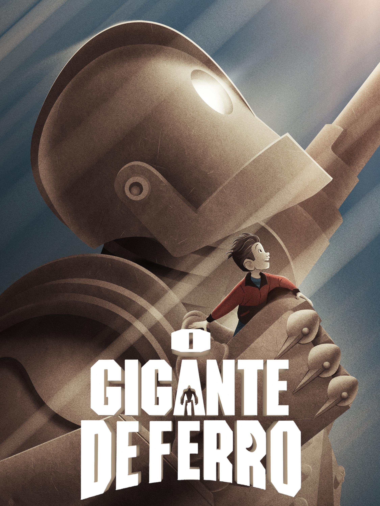

Em plenos anos 50, vive no Maine o jovem Hogarth. Quando ele repentinamente encontra um gigantesco robô de origem desconhecida, logo um forte laço de amizade se forma entre os dois. Porém, assim que a existência do robô é revelada, um agente do governo logo parte em seu encalço, no intuito de destruí-lo.
Nunca assisti o filme em si apenas partes mas parece ser um filme muito emocionante cheio de drama e comedia com um final "feliz" e comovente. ⭐5/5